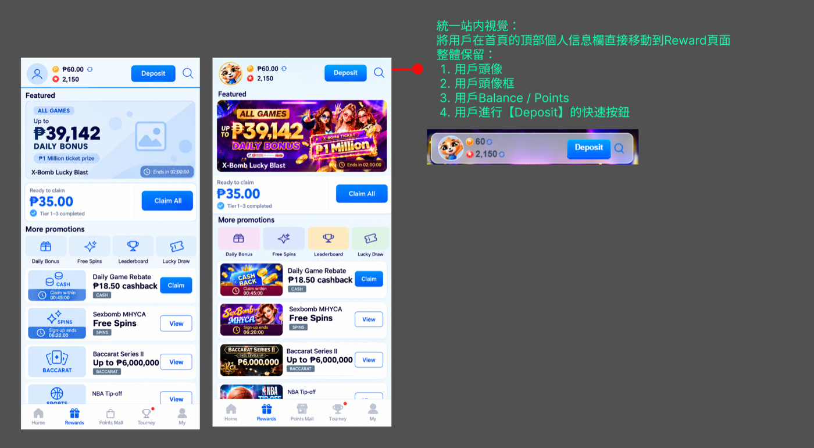
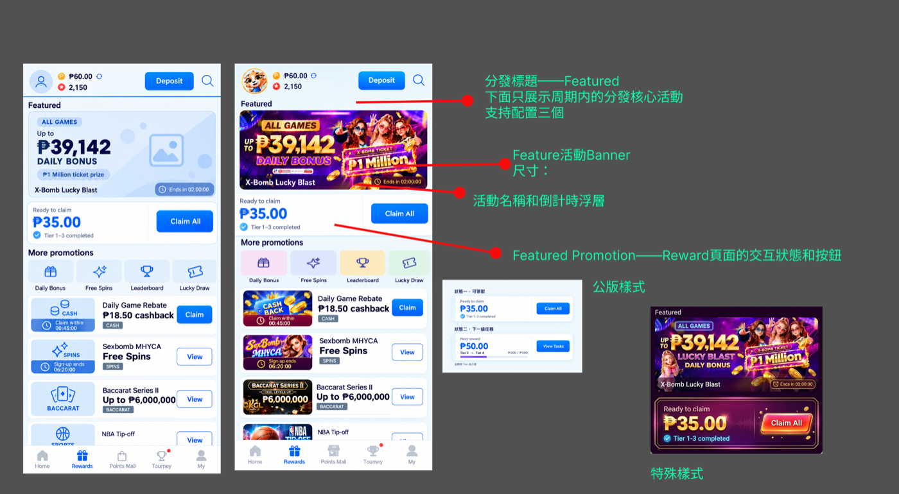
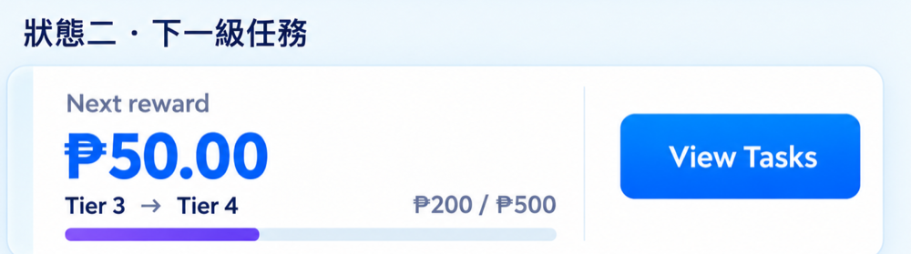
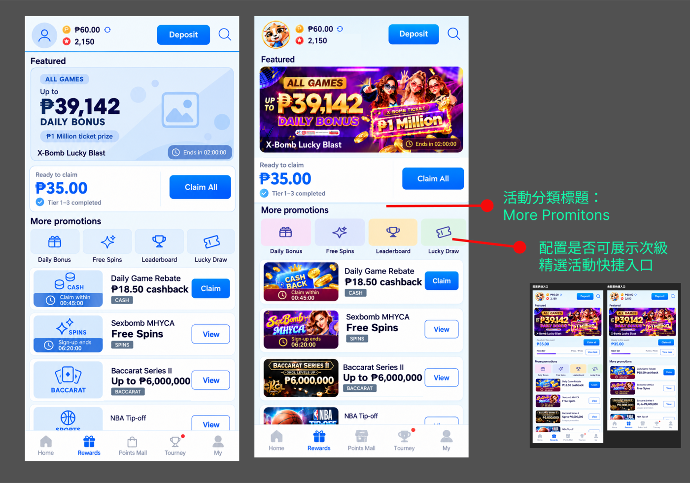
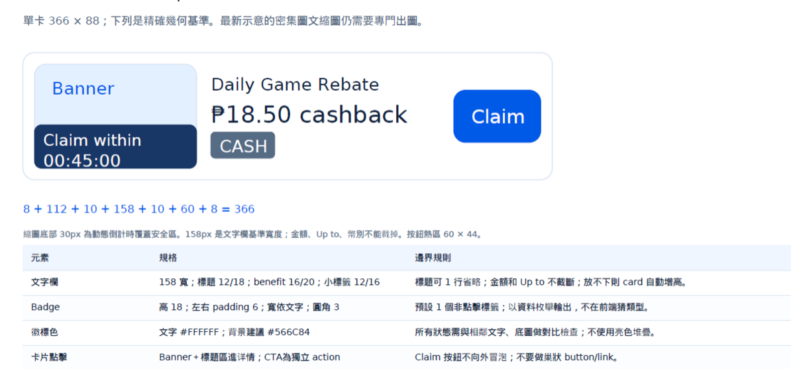
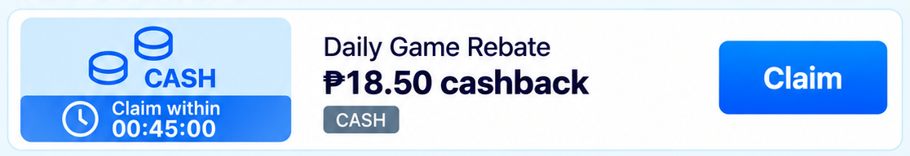
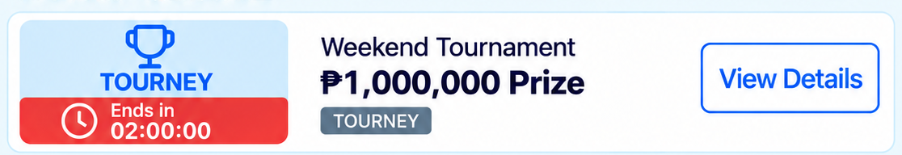
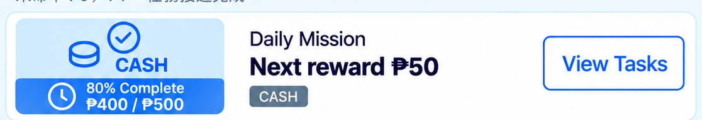

Rewards 页改版 · 开发评估回复
给运营看的版本。改版书（OKGAMES 2026 REWARD 页面改造需求文档）里每一项要求，开发都给了结论。照改版书章节一节一张表：运营要的、结论、开发评估原文（一字不改，直接从开发的文件贴过来）、PM 建议。整理日期：2026-10-27
一、一眼看结论
照做 10 项
- 2.1 个人栏：头像、余额、积分、Deposit、Voucher 入口
- 2.2 Hero Banner 倒计时与活动名称浮层
- 2.3.1 快捷入口专区（含前台显示开关）
- 2.3.2 Banner 角标：后台选 NEW、HOT、倒数
- 2.3.3 活动标签，每次最多三个
- 2.3.4 状态六：不可参与／限制
- 2.3.4 状态七：Auto Claimed 标签＋View Details
- 2.3.5 P0 按后台标签排序
- 2.3.5 P2 即将结束的活动
- 2.3.5 P5 自动发放的活动
建議先不做 13 项
- 2.1 My Rewards 显示目前可领几笔
- 2.2 依会员状态自动挑选精选活动
- 2.2 精选卡片「有券可用」
- 2.3.2 Banner 上显示个人数字（例：可领 3 笔）
- 2.3.4 状态二：有券可用（Use 按钮）
- 2.3.4 状态三：进度数字（₱400 / ₱500）
- 2.3.4 状态七：卡片上显示入账金额
- 2.3.5 P1 可领取的排前面
- 2.3.5 P3 即将完成的排前面
以下四項開發評估為「縮小範圍」（只能接 V2 新框架活動和已有角標數的 7 種活動）
- 2.2 精选领取卡片（可领金额、券数）
- 2.3.4 状态一：可领取
- 2.3.4 状态四：Pre-Registered
- 2.3.4 状态五：已截止但开放领取
PM 建议：先不做，等所有活动都能支援再一起处理。
所有活動的卡片行為一致，不會出現「有的活動卡片能一鍵領、有的要點進去領」的混用畫面，運營解釋規則與客服回答都單純。
二、改版書背景（原文）
- 頁面利用效率低：Reward頁面當前一屏只能展現兩個活動，并且展現樣式更多是類似於信息分發，缺少可以直接點擊轉化刺激用戶參與的點
- 信息分發層級不清：Reward 的第一任務應當是「查看、領取及使用個人獎勵」為核心，活動曝光與任務探索圍繞這個目的安排。所以需要調整個人獎勵的展現方式以及交互方式。
- 不夠 User-friendly：能使用，但閱讀與判斷成本偏高
- Task中心不應當出現在當前頁面，會給用戶造成認知和閲讀干擾
改版書「1. 整體情況概覽」原文：根據業務需求整理——兼顧以下兩份文檔的核心需求進行設計修改：OKBet Rewards 页面 v2.0、活动页面改版（含首页卡片）。這一段只是背景，開發沒有評估。
三、逐項對照
2.1頂部個人信息欄統一站內視覺

| 運營要的 | 結論 | 開發評估（原文） | PM 建議 |
|---|---|---|---|
| 用戶頭像＋用戶頭像框＋用戶 Balance / Points＋【Deposit】快速按鈕＋縮小 Voucher 的入口 | 照做 | 建議本次先不做「顯示目前有多少可以領取」：要把所有活動的可領數加總，每人進頁多一輪全活動查詢。改沿用底部導覽既有的待領取總數。頭像、餘額、積分、Deposit、Voucher 入口照做。 | 照改版书做。 |
| 顯示 My Rewards ——顯示當前有多少可以領取 | 建議先不做 | 不做。可领数沿用底部导航既有的待领取红点。 |
2.2Featured Promotion：精選活動區域

| 運營要的 | 結論 | 開發評估（原文） | PM 建議 |
|---|---|---|---|
| 新增：Hero Banner 倒計時和活動名稱浮層 | 照做 | 倒數計時與活動名稱浮層可以做（倒數純前端計算）。但「依會員狀態自動挑選精選活動」建議先不做，改由後台指定。 | 做。倒数由前台计算。 |
| 依會員狀態自動挑選精選活動 | 建議先不做 | 不做。精选活动改由后台指定。 | |
| 新增：Featured Promotion 領取交互卡片（狀態一、狀態二）  | 縮小範圍 | 精選卡片的「可領金額」「券數」每人進頁都要查獎勵與券兩張表。建議本次只接 V2 新框架活動與已有角標數的 7 種活動；「有券可用」先不做。 | 建议先不做。目前只能支援部分活动，等所有活动都能支援再一起处理。 |
| 新增：分層標題——Feature；Featured Promotion Banner 尺寸（設計規範以及 Pagcor 的安全距離線）；卡片展示樣式（公版默認樣式／特殊設計樣式） | 開發未標註 | 開發沒有對這幾項寫評估。 | 照设计稿做。 |
2.3.1配置展示次級精選活動快捷入口專區

| 運營要的 | 結論 | 開發評估（原文） | PM 建議 |
|---|---|---|---|
| 後台支持配置快捷入口專區——該區域需要後台有是否前端展示的開關 | 照做 | 照做沒問題，純後台配置，不看會員狀態。 | 照做，后台加显示开关。 |
2.3.2配置展示次級活動 Banner

| 出現場景 | 顯示規則 |
|---|---|
| 活動結束時間 | Ends in：Date（DD/MM/YY) |
| 獎勵領取截止 | Claim within：這筆或這組可領獎勵的領取期限 |
| 報名截止時間 | Sign-up ends：預登記／報名截止 |
| 獎勵券使用截止 | Use within：已領取獎勵券的使用期限 |
| 任務週期結束 | Resets in：每日任務刷新時間 |
| 1 小時≤剩餘時間≤24 小時 | Ends in: HH:MM:SS (玫紅色） |
| 自動發放獎勵 | Auto Claimed |
| 活動結束 但是開放入口給用戶領取獎勵 | Activity End |
| 沒有配置 | 不展示 |
改版書 2.3.2 嵌入的 Badge 選項表（原文，取自 docx 內嵌 Excel）
| 運營要的 | 結論 | 開發評估（原文） | PM 建議 |
|---|---|---|---|
| Banner Badge 展現邏輯：下屬選項運營可後台自動配置進行展現選擇 | 照做 | Badge 用後台選的標籤（NEW、HOT、倒數）照做沒問題。「顯示個人數字（例：可領 3 筆）」建議先不做，每張 Banner 都要為每個會員各查一次。 改版書同段另有一句：目前示意把倒計時放在Hero或縮圖內；時計是動態資料層，不能在營運圖片中寫死。 | 后台下拉选角标；倒数由前台计算，不做进图片。 |
| 顯示個人數字（例：可領 3 筆） | 建議先不做 | 不做。 | |
| 設計需求：設計參考尺寸和顏色（顏色可以修改）；標籤可以是不同顏色 | 開發未標註 | 開發沒有對這項寫評估。 | 照设计稿做。 |
2.3.3配置展示活動 Labels——每次配置最多三個
| 獎勵分類 | Labels | 使用原則 |
|---|---|---|
| 興趣分類 | Slot、Casino、Perya、Sports | 不用作爲More Promotion的標簽展示，但是需要根據用戶興趣選擇的標簽展示 |
| 1. 獎勵價值 | Cashback、Points、Extra、Spin | 金額、倍數和獎勵種類必須有規則支持；正文已寫清楚的內容不重複 |
| 2. 參與門檻 | No Deposit、Free Entry | 不需充值才能標 No Deposit；Free Entry 只表示免報名費，不能暗示沒有其他任務條件 |
| 3. 領取與使用條件 | No Wagering、Instant Credit、Turnover Require | No Wagering 指獎勵無額外流水要求；Instant Credit 必須確實即時入帳，不能拿「可領取」代替 |
| 4. 適用資格 | New Players、VIP、Invite Only、Resigned Only | 對應明確資格；有具體 VIP 門檻時，直接顯示等級更清楚 |
| 5. 遊戲適用範圍 | All Games、Selected Games、Sports Only | 必須明確這個字段指「任務計算範圍」還是「獎勵使用範圍」，不能混用 |
| 6. 活動頻率與新鮮度 | Daily、Weekends、New、Special、Popular | Daily 不代表無條件每天發獎；New 要有固定展示期限，不能永久掛著 |
| 7. 活動類型 | Rebate、Loss Rebate、Leaderboard、Deposit | 表示活動類型 |
改版書 2.3.3 嵌入的 Labels 分類表（原文，取自 docx 內嵌 Excel）
| 運營要的 | 結論 | 開發評估（原文） | PM 建議 |
|---|---|---|---|
| 後台配置活動 Labels，每次配置最多三個 | 照做 | 照做沒問題，純後台配置。 | 照做，上限 3 个。 |
2.3.4More Promotion 交互按鈕
| 運營要的 | 結論 | 開發評估（原文） | PM 建議 |
|---|---|---|---|
| 狀態一：可以領取前獎勵 | 縮小範圍 | 縮小範圍：只接 V2 新框架活動（預約、周卡、XBomb）與已有角標數的 7 種活動，其餘舊活動顯示 View Details。 | 建议先不做。目前只能支援部分活动，等所有活动都能支援再一起处理。 |
| 狀態二：已經有可以使用的獎勵券，引導進入 MY Voucher 進行查看 | 建議先不做 | 建議先不做：每張卡多查一次優惠券，券用掉後按鈕會停在 Use 幾分鐘，容易誤點。改走 View Details，券入口維持頂部 Voucher。 | 不做，按钮走 View Details；券入口维持顶部 Voucher。 |
| 狀態三：任務進行中 | 建議先不做 | 建議先不做進度數字「₱400 / ₱500」：要統計每人在每檔活動的投注累計，是整個畫面最耗資源的一項，且投注後本來就不即時。按鈕固定 View Tasks，進度在詳情頁看。 | 按钮固定 View Tasks，不显示进度数字；进度在详情页看。 |
| 狀態四：Pre-Registered | 縮小範圍 | 縮小範圍：只接 V2 預約活動，其他活動沒有統一的報名紀錄。 | 建议先不做。目前只能支援部分活动，等所有活动都能支援再一起处理。 |
| 狀態五：已經截止但是開放入口進行領取 | 縮小範圍 | 同狀態一，縮小範圍到 V2 與既有 7 種活動。 | 建议先不做。目前只能支援部分活动，等所有活动都能支援再一起处理。 |
| 狀態六：不可參與／限制（VIP 專屬活動／未註冊無法參與活動） | 照做 | 照做沒問題，用會員等級就能判斷。 | 做，用会员等级判断。 |
| 狀態七：自動發放（被動入賬活動） | 照做 金額先不做 | 顯示 Auto Claimed 標籤與 View Details 照做。「卡片上顯示入帳金額」建議先不做，要再多查一次派彩紀錄，金額在詳情頁看。 | 做 Auto Claimed 标签＋View Details；卡片不显示金额。 |
總結：七狀態全做時一張卡要查 4~5 次，12 張卡 50~60 次，是現在的 5~10 倍；依上述縮減後與現在相當。
2.3.5More Promotion 自動推送展現邏輯
| 運營要的 | 結論 | 開發評估（原文） | PM 建議 |
|---|---|---|---|
| P0：根據活動標籤展示用戶帶有標籤的活動 | 照做 | 若標籤是後台標籤照做沒問題；若是會員標籤需再評估。 | 用后台标签做；是不是后台标签请运营确认。 |
| P1：展示用戶可以領取的獎勵  | 建議先不做 | 建議先不做：要先查完所有卡片才知道哪張可領，讓「點進去才查」變成「進頁就全查」，Expand 折疊救不了。可領的卡片維持現有角標數字。 | 不做。可领的卡片维持现有角标红字。 |
| P2：展現即將結束的活動  | 照做 | 照做沒問題，只看時間。 | 做，只看时间。 |
| P3：展現用戶即將完成的活動  | 建議先不做 | 建議先不做：和狀態三一樣要先算完每檔活動的進度才能排。 | 不做。 |
| P5：展現自動發送的活動 | 照做 | 顯示 Auto Claimed 卡片照做，不顯示金額。 | 做 Auto Claimed 卡片，不显示金额。 |
總結：排序會把「點進去才查」變成「進頁就全查」；派獎、推播那幾分鐘大家同時進頁，尖峰放大 5~10 倍。先不做 P1、P3，其餘照做。
四、需求厘清（请运营回复）
- 2.3.5 P0 的「标签」指后台标签还是会员标签？后台标签照做；会员标签开发要再评估。
- 2.3.2 Badge 选项表列的是 Ends in、Claim within、Sign-up ends、Use within、Resets in、Auto Claimed、Activity End 这些时间类角标，开发回复写的是「后台选的标签（NEW、HOT、倒数）」。请运营确认本期角标要哪几种，再请开发逐一确认。
- 2.3.5 排序的图和文字对不上：图标的是 P0 可领取、P1 即将结束、P2 即将完成、P4 自动发放；文字是 P0 标签、P1 可领、P2 即将结束、P3 即将完成、P5 自动发放。开发是照文字版评估的，本表照文字版排，图上的卡片按内容对应放到各列；请运营确认以文字版为准。
- 缩小范围的四项（精选卡片、状态一、状态四、状态五）
- 开发评估：只能接 V2 新框架活动和已有角标数的 7 种活动，其余旧活动显示 View Details。
- PM 建议：先不做，等所有活动都能支援再一起处理。
- 好处：所有活動的卡片行為一致，不會出現「有的活動卡片能一鍵領、有的要點進去領」的混用畫面，運營解釋規則與客服回答都單純。
- 请运营确认。
五、名词小抄
- V2 新框架活动：开发指预约、周卡、XBomb 这三种用新框架做的活动。
- 已有角标数的 7 种活动：开发原文用语，指目前奖励页上已经会显示红色待领取数字的既有活动。具体是哪 7 种，开发文件没有列，要再向开发确认。
- 「点进去才查」与「进页就全查」：现在是会员点进某个活动才查那个活动的资料；改版要求的个人数字、排序，会变成一进奖励页就把所有活动都查一遍，人一多页面就慢。